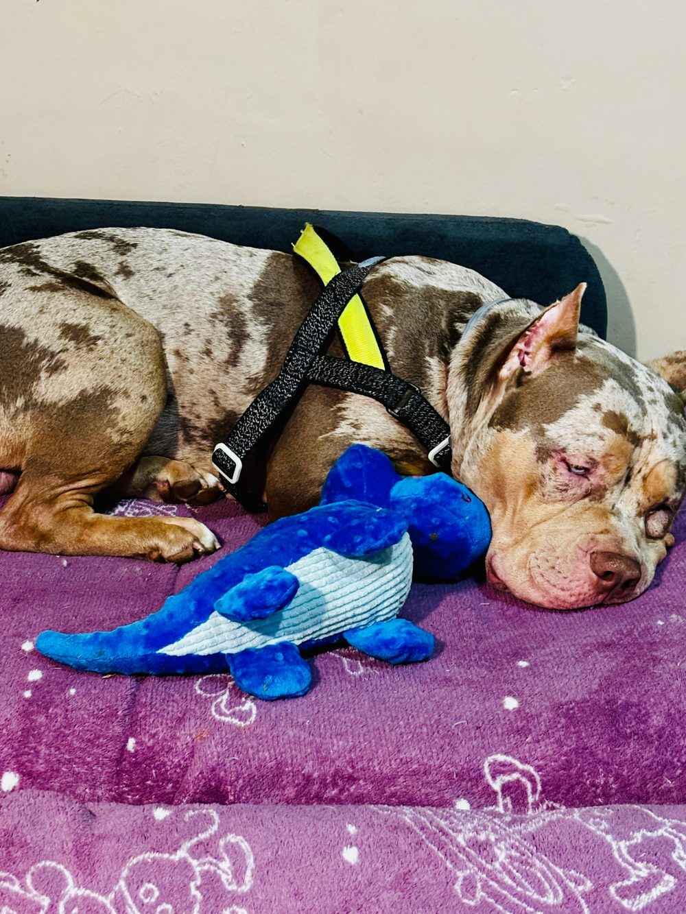

O Odin é um American Bully de um ano. Vacinado em dia, cheio de energia, do tipo que derruba a gente na porta.
Antes da cinomose
Passeio na praia, com o Pão de Açúcar ao fundo.De olho em tudo, sempre por perto.Pata dada, do jeito que ele gosta.
2
A cinomose
Em setembro, o Odin pegou cinomose, mesmo vacinado. Começou com uma tosse e, duas semanas depois, vieram as convulsões. A doença foi pro sistema nervoso e ele parou de andar.
Setembro e outubro

Em casa depois da primeira alta, com o dinossauro de pelúcia.Carinho no colo, entre uma internação e outra.Na véspera da segunda internação.
3
As internações
Entre setembro e novembro ele ficou internado três vezes. Fez aniversário de 1 ano internado e precisou de transfusão de sangue. Cada veterinário, cada exame, cada laudo chegava por um canal diferente.
4
A casa virou uma UTI
Ele voltou pra casa no dia 16 de novembro. Remédio de hora em hora, temperatura, água, comida, mudar ele de posição, sonda pro xixi. E a família perguntando no grupo: “alguém já deu o das 14h?”
08:15 Colírio
12:45 Remédios antes do almoço
14:00 Água e mudar de lado
20:00 Medir a temperatura
5
Da planilha pro app
Eu sou engenheira de software. Comecei com uma planilha e virou um app: ele avisa a hora de cada coisa, mostra quem fez o quê, lê os laudos e transforma em gráfico. Hoje a gente cuida do Odin com ele. [Uma linha sobre como ele está hoje.]
Tomando sol em casa, 20 de novembro.
6
Por que esta página
Se ajudou a gente, pode ajudar outras famílias que cuidam de um pet doente. Antes de transformar isso num produto, quero ouvir quem vive a mesma rotina. E o que esse projeto render vai ajudar a pagar o tratamento do Odin.
Talvez você conheça essa rotina.
Quem deu o remédio das 14h?
Três pessoas cuidando, nenhuma sabe se a dose já foi.
Qual era o valor do último hemograma?
O laudo está em algum lugar do WhatsApp.
Acabou a seringa de novo?
Só dá pra perceber quando precisa usar.
Ele bebeu água suficiente hoje?
Ninguém anotou, então ninguém sabe.
Me ajuda a entender se você passa pelo mesmo?
São perguntas rápidas sobre a sua rotina, uns 3 minutos. Não precisa deixar nome.
Prévia: as respostas ainda não são enviadas pra lugar nenhum.
Por que Munin Pet?
Na mitologia nórdica, o deus Odin tem um corvo chamado Munin, a memória. Todo dia ele voa pelo mundo e, à noite, volta e conta tudo o que viu.
É isso que esse app faz pelo nosso Odin, e pode fazer pelo seu pet: lembra cada remédio, cada exame e quem cuidou dele, pra ninguém precisar guardar tudo de cabeça.
O que a gente construiu
Telas com dados de exemplo, de uma pet fictícia chamada Mel.
Hoje
14:00 · Prednisona 5 mgFeito
Ana deu às 14:02
16:00 · Água 120 mlPendente
20:00 · Temperaturadaqui 4 h
Adesão da semana: 96% no horário
Ninguém fica na dúvida
O celular avisa a hora de cada cuidado. Quem fizer marca, e a família toda vê quem fez.
Exames · HemáciasFaixa verde: valores de referênciaLaudo em PDF lido automaticamente
Exames viram gráfico
Manda o PDF do laboratório e o app separa os valores e mostra a evolução de cada um.
Estoque
Seringa 10 mlacaba em 3 dias
Ração úmida12 dias
Prednisona 5 mg18 dias
Lista de compras pronta pra copiar
Nada acaba de surpresa
O app conta o que foi usado e avisa antes de acabar remédio, comida ou material.
Obrigada de verdade.
Cada resposta me ajuda a entender se isso pode ajudar outras famílias. Se puder, manda a página pra alguém que cuida de um pet doente.